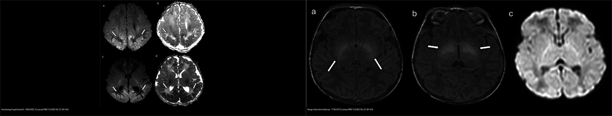
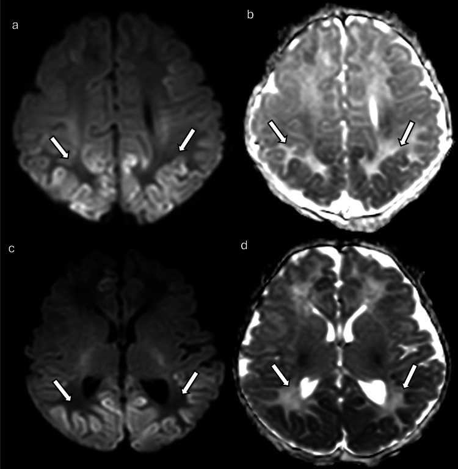
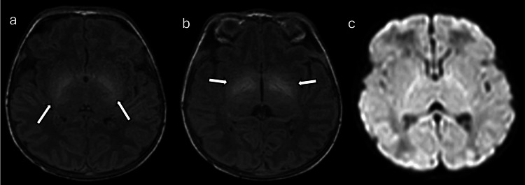
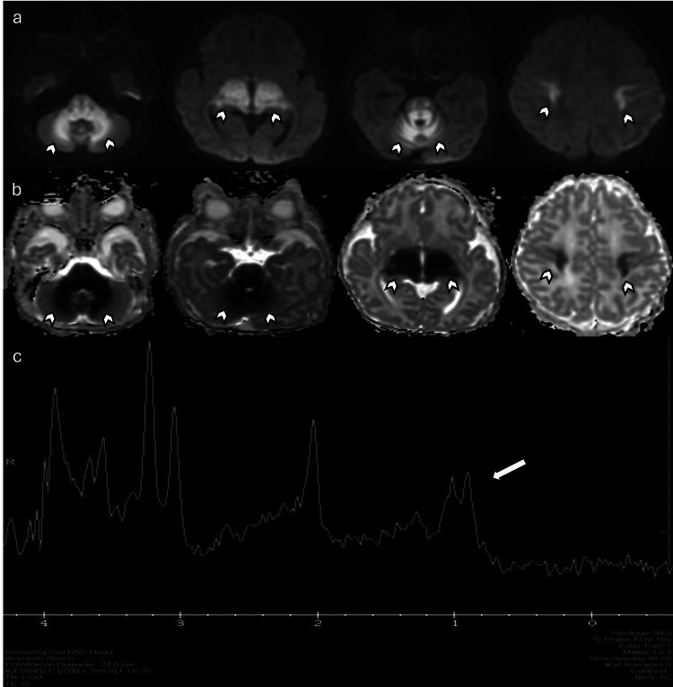
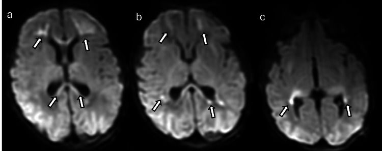
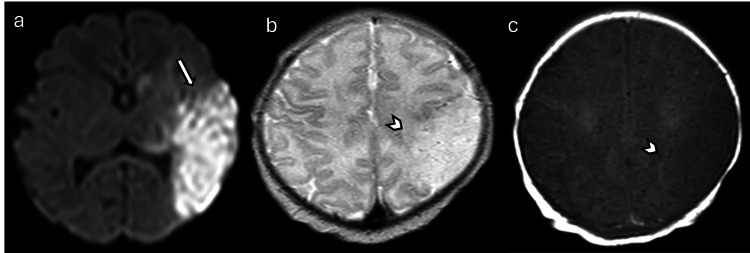

654 — Tổn thương não sơ sinh KHÔNG do ngạt: hạ đường huyết, vàng nhân (kernicterus) & các bệnh não giả HIE
Tags: pattern:benh-nao-so-sinh pattern:han-che-khuech-tan vung:nao-nhi score:BIND protocol:MRI-nao-so-sinh
Mức chắc chắn (certainty): tổng hợp y văn (literature synthesis) — nhóm tự biên từ bài tổng quan hình ảnh có số (pictorial review CC BY) + y văn về ngưỡng đường huyết/bilirubin; các ca trong quiz là ca nguyên văn (verbatim case) chép đúng tuổi – bối cảnh – chú thích gốc.
1. Tổng quan bệnh học – cơ chế hình ảnh
Bệnh não sơ sinh (neonatal encephalopathy, NE) là hội chứng lâm sàng ở trẻ ≥ 35 tuần (rối loạn tri giác, co giật, giảm trương lực, khó bú, suy hô hấp). Ngạt (HIE) chỉ chiếm một phần; các nguyên nhân không do ngạt (nhiễm trùng, chuyển hóa, hạ đường huyết, vàng nhân, đột quỵ, dị tật) chiếm phần còn lại và hình ảnh có thể giống HIE đến mức gây điều trị sai (hạ nhiệt trị liệu vô ích, kháng sinh muộn, bỏ sót hạ đường huyết/vàng nhân).
- Vàng nhân / bệnh não do bilirubin (kernicterus – acute bilirubin encephalopathy, ABE). Bilirubin gián tiếp, thân dầu (lipophilic) khi vượt khả năng gắn albumin sẽ qua được hàng rào máu–não và lắng đọng chọn lọc ở thể vân (globus pallidus), nhân dưới đồi (subthalamic nuclei), hải mã, nhân vận nhãn, nhân ốc tai bụng, tế bào Purkinje/nhân răng. Vì trẻ sơ sinh còn ít myelin, bilirubin gắn vào màng tế bào non → rút ngắn T1 (T1 hyperintensity) ở thể vân. TẠI SAO DWI ÂM trong ABE (khác HIE): tổn thương không phải phù độc tế bào cấp mà là nhiễm độc màng/thần kinh trục → không hạn chế khuếch tán trong giai đoạn cấp. Khi thành kernicterus mạn (sau nhiều tháng), tổn thương chuyển thành T2 tăng tín hiệu ở cùng vị trí (gliosis/hoại tử).
- Ngưỡng định lượng: bilirubin toàn phần (TSB) ≥ 20 mg/dL sau 72 giờ là ngưỡng chiếu đèn thường dùng; TSB ≥ 25 mg/dL có độ đặc hiệu 92% nhưng độ nhạy chỉ 67% cho kernicterus spectrum disorder (KSD); nguy cơ ABE tăng rõ khi TSB > 30 mg/dL. Thang lâm sàng BIND-M ≥ 3 có độ nhạy 100% / độ đặc hiệu 83% cho KSD tương lai. MRI T1 thể vân tăng tín hiệu gặp ở 8/13 trẻ ABE (Coskun 2005), xuất hiện 5–25 ngày sau sinh — nhưng cả trẻ lành cũng có thể T1 thể vân sáng (xem cạm bẫy).
- Hạ đường huyết sơ sinh (neonatal hypoglycemia). Não sơ sinh phụ thuộc glucose; hạ đường huyết kéo dài → suy năng lượng ở vùng nhu cầu chuyển hóa cao / ngã ba tưới máu sau → phù độc tế bào → ADC giảm, DWI tăng. Vùng điển hình: vỏ/dưới vỏ chẩm–đỉnh–thái dương sau (posterior predominant), đồi thị, hải mã, đôi khi tiểu não/thân não (ca trong bài còn có nhộng tiểu não + trung não lưng-bên + đồi thị hai bên). Khác HIE: hạ đường huyết né đồi thị bó vỏ-tủy – bao trong (PLIC) và không thiên về vùng phân thủy; tổn thương chẩm có thể hồi phục nếu bù glucose sớm.
- Ngưỡng định lượng (không có một ngưỡng tuyệt đối): < 47 mg/dL (2,6 mmol/L) là ngưỡng được dùng phổ biến; AAP can thiệp khi < 40 mg/dL ở 4 giờ đầu (có triệu chứng) và < 45 mg/dL lúc 4–24 giờ**, mục tiêu **≥ 45 mg/dL trước bú**; **PES** mục tiêu **> 50 mg/dL (48 giờ đầu) → > 60 mg/dL sau đó. Lưu ý: các phiên bản guideline (AAP 2011/2021, PES 2015) khác nhau — ghi rõ nguồn khi trích.
- Bệnh chuyển hóa (metabolic). Ví dụ bệnh nước tiểu mùi si-rô phong (maple syrup urine disease, MSUD): ứ axit amin chuỗi nhánh → phù độc tế cơ ở tủy, thân não, tiểu não, đồi thị, bó vỏ-tủy (DWI hạn chế khuếch tán); MRS có đỉnh bất thường 0,9 ppm (axit amin chuỗi nhánh). Tăng đường huyết không ceton (nonketotic hyperglycemia): MRS đỉnh glycine 3,56 ppm (TE 144 ms) + DWI hạn chế ở bó vỏ-tủy/thân não lưng/cuống tiểu não.
- Nhiễm trùng thần kinh trung ương. Viêm màng não–não do parechovirus ở trẻ nhỏ: DWI nhiều ổ chất trắng dưới vỏ ưu thế thùy trán + bó thể chai + đồi thị; viêm màng não do GBS (trẻ 11 ngày): ổ hạn chế khuếch tán rải rác + ngấm màng não dọc thùy thái dương dưới/nắp chẩm, có thể tụ mủ dưới màng cứng.
- Đột quỵ nhũ nhi (perinatal arterial ischemic stroke). Hạn chế khuếch tán một bên theo lãnh thổ động mạch (thường ĐM não giữa), có thể kèm co giật khu trú; trên T2/T1 thấy phù/mất tín hiệu T1 bình thường khi sang giai đoạn bán cấp.
2. Mẫu hình + chẩn đoán phân biệt theo vị trí (gamut)
Gamut theo vùng tổn thương trên MRI (đọc DWI/ADC trước, T1/T2 sau):
- Vỏ–dưới vỏ vùng chẩm–đỉnh–thái dương sau, đối xứng, né nhân xám sâu: hạ đường huyết (thêm đồi thị/hải mã/nhộng tiểu não), PRES (nối [219]).
- Thể vân + nhân dưới đồi, T1 SÁNG, DWI ÂM: vàng nhân/ABE — dấu hiệu gần như đặc trưng khi có tăng bilirubin gián tiếp nặng.
- Đồi thị + PLIC + vỏ quanh rãnh trung tâm, ĐỐI XỨNG, DWI sáng: HIE thể nhân xám trung tâm (đối chiếu, nối [655]).
- Vỏ/dưới vỏ nhiều ổ rải rác + chất trắng thùy trán + bó thể chai: nhiễm trùng (parechovirus, GBS) hoặc bệnh chuyển hóa.
- Một bên theo lãnh thổ ĐM não giữa: đột quỵ nhũ nhi.
- Dị tật vỏ (polymicrogyria) + DWI bình thường: bệnh lý rối loạn phát triển vỏ (di truyền), không phải tổn thương cấp.
3. Bảng so sánh phân biệt (ma trận đối chiếu)
| Thực thể (entity) | Hình ảnh điển hình | Chốt vào (rule-in) | Chốt loại (rule-out) | Gợi ý xác nhận |
|---|---|---|---|---|
| Hạ đường huyết (hypoglycemic encephalopathy) | DWI sáng vỏ–dưới vỏ vùng chẩm/đỉnh–thái dương sau, đồi thị, hải mã, có khi nhộng tiểu não/trung não lưng-bên | Vùng sau (posterior) chiếm ưu thế + đường huyết thấp + né PLIC | Đồi thị + PLIC sáng đối xứng, thiên phân thủy → HIE | Đo glucose huyết tương; ca 1 ngày tuổi có co giật/lơ mơ; bù glucose, MRI lại |
| Vàng nhân / ABE (kernicterus) | T1 tăng tín hiệu đối xứng thể vân + nhân dưới đồi, DWI KHÔNG hạn chế | T1 thể vân sáng + bilirubin gián tiếp nặng (TSB cao) | DWI sáng thể vân → nghĩ HIE/thể nhân xám, không phải ABE | TSB/BIND-M, ABR, theo dõi T2 (kernicterus mạn → T2 thể vân sáng) |
| HIE (đối chiếu) | BGT: DWI sáng đồi thị + PLIC; watershed: vỏ đỉnh-chẩm né đồi thị | Đối xứng + bối cảnh ngạt (sentinel event) | Vùng chẩm đơn thuần + né PLIC → nghĩ hạ đường huyết | Sarnat I–III; ADC < 0,8 × 10⁻³ mm²/s (bài [655]) |
| Bệnh chuyển hóa (MSUD, nonketotic hyperglycemia) | DWI hạn chế tủy/thân não/cuống tiểu não/đồi thị/bó vỏ-tủy; MRS bất thường | MRS bất thường đặc trưng (0,9 ppm MSUD; glycine 3,56 ppm) | MRS bình thường + tổn thương đối xứng nhân xám → HIE | Ammonia, lactate, axit amin/axit hữu cơ niệu, MRS |
| Nhiễm trùng TKTW (parechovirus, GBS) | DWI nhiều ổ chất trắng dưới vỏ ưu thế trán + bó thể chai ± đồi thị; ngấm màng não | Ổ rải rác nhiều ổ + bối cảnh nhiễm trùng (sốt/sepsis) | Một vùng theo lãnh thổ mạch đơn thuần → đột quỵ | Dịch não tủy, PCR virus, cấy; ngấm màng não sau tiêm |
| Đột quỵ nhũ nhi (perinatal stroke) | Một bên theo lãnh thổ ĐM não giữa, T2 phù/T1 mất tín hiệu | Một bên + thuận lãnh thổ mạch + co giật khu trú | Hai bên đối xứng → nghĩ hạ đường huyết/HIE | MRA/MRV, siêu âm Doppler, đối chiếu phim cũ |

Trái (a–d): DWI/ADC — hạ đường huyết sơ sinh: hạn chế khuếch tán vùng chẩm–thái dương sau, đồi thị, hải mã, nhộng tiểu não. Phải (a–c): T1W/DWI — vàng nhân: T1 tăng tín hiệu thể vân + nhân dưới đồi, DWI không hạn chế. Nguồn: Cureus PMC12240218, CC BY 4.0. Ảnh ghép letterbox, giữ tỉ lệ.4. Protocol chụp + hệ phân độ/điểm chuẩn hóa
- MRI sọ không cản quang là chìa khóa phân biệt. Chuỗi tối thiểu: T1W, T2W, DWI + ADC, T2/SWI*; thêm MRS (đỉnh chuỗi nhánh/glycine/lactate) khi nghi chuyển hóa; MRA/MRV khi nghi đột quỵ/huyết khối xoang.
- Thời điểm: DWI chốt tổn thương ngày 2–4 (ADC đáy); T1 thể vân trong vàng nhân rõ ở 5–25 ngày; nhớ giả bình thường hóa DWI khoảng ngày 7–10. Chụp lại khi lâm sàng tiến triển.
- Xét nghiệm song song (bắt buộc trước khi quy kết "HIE"): glucose huyết tương, bilirubin toàn phần (TSB), khí máu/lactate, ammonia, điện giải, axit amin + axit hữu cơ niệu, cấy máu/dịch não tủy + PCR virus, và ABR khi nghi vàng nhân.
- Ngưỡng xử trí:
- Hạ đường huyết: can thiệp theo ngưỡng mục tiêu (AAP: < 40 mg/dL 4 giờ đầu / < 45 mg/dL 4–24 giờ; mục tiêu ≥ 45 mg/dL**; PES: **> 50 → > 60 mg/dL).
- Vàng nhân: chiếu đèn khi TSB ≥ 20 mg/dL sau 72 giờ; thay máu theo ngưỡng phụ thuộc tuổi thai/cân nặng/yếu tố nguy cơ + albumin; cân nhắc truyền IVIG trong bệnh tan máu.
- Thang điểm: BIND/BIND-M (đánh giá độc thần kinh do bilirubin lúc giường — ≥ 3 điểm có giá trị tiên lượng KSD); Sarnat cho HIE (đối chiếu [655]).
flowchart TD
A["Tre so sinh benh nao (co giat / lo mo / giam truong luc)"] --> B{"Bang chung ngat ro (sentinel event) + Sarnat II-III?"}
B -->|Co| C["Nghi HIE: ha nhiet tri lieu neu du tieu chuan (< 6 gio, >= 36 tuan)"]
B -->|Khong ro| D["Do glucose + bilirubin (TSB) + ammonia/lactate + MRS/DWI"]
D --> E{"Kieu ton thuong MRI + xet nghiem?"}
E -->|"Vo-doi vo vung sau, ne PLIC, glucose thap"| F["Ha duong huyet: bu glucose, MRI lai"]
E -->|"T1 the van sang, DWI am, TSB cao"| G["Vang nhan ABE: chieu den / thay mau, ABR"]
E -->|"DWI nhieu o chat trang + bo the chai"| H["Nhien trung TKTW: khang sinh + PCR virus"]
E -->|"Mot ben theo lanh tho DM nao giua"| I["Dot quy nhu nhi: MRA/MRV, theo doi"]
E -->|"MRS bat thuong 0,9 / 3,56 ppm"| J["Benh chuyen hoa: che do an dac biet"]
E -->|"Doi xung doi thi + PLIC (BGT)"| C
5. Biến thể bình thường và cạm bẫy
- T1 thể vân sáng ở trẻ sơ sinh KHÔNG đồng nghĩa vàng nhân. Myelin hóa bình thường và cả trẻ lành cũng có thể có T1 sáng nhẹ ở thể vân → đừng chẩn đoán ABE chỉ dựa vào một ảnh T1; phải khớp TSB cao + bối cảnh lâm sàng (cảnh báo sai dương đã được nêu trong y văn). Đọc T1 so với PLIC/thân não — myelin hóa bình thường cho tương phản rõ, không "sáng bệnh lý lan tỏa".
- Không hạn chế khuếch tán KHÔNG loại trừ vàng nhân. ABE cấp thường DWI âm; nếu chỉ dựa DWI sẽ bỏ sót. Ngược lại, DWI sáng nhân xám sâu đối xứng phải nghĩ HIE, không phải ABE.
- Hạ đường huyết giả HIE thể watershed: vùng chẩm–đỉnh cũng có thể sáng trong HIE thể phân thủy → phân biệt bằng đường huyết, đồi thị/hải mã, và né PLIC.
- Bỏ sót nguyên nhân "phối hợp": trẻ ngạt HOÀN TOÀN có thể kèm hạ đường huyết, vàng nhân, nhiễm trùng — "thấy HIE rồi dừng" (satisfaction of search) là bẫy thường gặp; làm đủ xét nghiệm chuyển hóa/nhiễm trùng.
- Giả ảnh DWI: hố sau/đáy sọ méo hình do tiếp giáp xương, dễ nhầm "tổn thương" — đối chiếu ADC + T2.
- MRS đọc theo TE: đỉnh glycine chỉ rõ ở TE 144 ms; đỉnh chuỗi nhánh ở 0,9 ppm — ghi rõ TE khi trích.
6. Tự lượng giá — Blind Quiz (ảnh trơn ngoài, đáp án ẩn trong khối chi tiết)
Ca 1 — Trẻ 1 ngày tuổi, co giật, lơ mơ, bú kém, đường huyết thấp. DWI + ADC. Mô tả trước khi mở đáp án.

- Gợi ý lâm sàng: nhập viện ngày đầu, co giật, đường huyết hạ.
- Câu hỏi: Vùng nào hạn chế khuếch tán? Có né nhân xám sâu/PLIC không? 3 chẩn đoán phân biệt và dấu hiệu chốt?
Bấm để hiện đáp án (findings + chẩn đoán)
- Dấu hiệu: DWI/ADC (a–d) hạn chế khuếch tán đối xứng vùng chẩm hai bên, thái dương sau, đồi thị, hải mã, nhộng tiểu não, trung não lưng-bên, hồi đai — bố cục ưu thế vùng sau.
- Chẩn đoán: bệnh não do hạ đường huyết (hypoglycemic encephalopathy) — vì não sơ sinh phụ thuộc glucose, vùng sau có nhu cầu chuyển hóa cao → phù độc tế bào → ADC giảm. Dấu hiệu chốt: đường huyết thấp + ưu thế vùng sau, né PLIC (khác HIE nhân xám trung tâm).
- Nguồn ảnh: Silva G et al., Cureus 2025 (PMC12240218), Fig 14, CC BY 4.0.
Ca 2 — Trẻ 7 ngày tuổi, vàng da tăng bilirubin gián tiếp nặng. MRI T1W và DWI. Đây có phải ngạt không?

- Gợi ý lâm sàng: vàng da tiến triển, không có biến cố ngạt rõ.
- Câu hỏi: Chuỗi nào bắt tổn thương? Vị trí? Vì sao DWI không sáng? Chẩn đoán?
Bấm để hiện đáp án (findings + chẩn đoán)
- Dấu hiệu: (a,b) T1W tăng tín hiệu nhẹ đối xứng ở thể vân (globus pallidus) + nhân dưới đồi; (c) DWI KHÔNG hạn chế khuếch tán.
- Chẩn đoán: vàng nhân (kernicterus)/ABE. Bilirubin tự do thân dầu lắng đọng chọn lọc thể vân/nhân dưới đồi, gắn màng tế bào non → rút ngắn T1; không phải phù độc tế bào → DWI âm (điểm khác HIE). Khi mạn → T2 thể vân sáng.
- Phản biện/ngưỡng: T1 thể vân sáng cũng gặp ở trẻ lành → chỉ chốt khi khớp TSB cao; BIND-M ≥ 3 và TSB ≥ 25 mg/dL gợi ý nguy cơ KSD.
- Nguồn ảnh: Silva G et al., Cureus 2025 (PMC12240218), Fig 13, CC BY 4.0.
Ca 3 — Trẻ 7 ngày tuổi, bú kém, lơ mơ tăng dần. DWI/ADC + MRS.

- Gợi ý lâm sàng: không sốt rõ, không biến cố ngạt; bệnh cảnh nặng dần sau bú.
- Câu hỏi: Vùng hạn chế khuếch tán? MRS gợi ý gì? Chẩn đoán nhóm nào?
Bấm để hiện đáp án (findings + chẩn đoán)
- Dấu hiệu: DWI/ADC hạn chế khuếch tán tủy sống, thân não, chất trắng tiểu não, đồi thị, bó vỏ-tủy; MRS (TE 35 ms) có đỉnh bất thường 0,9 ppm (axit amin chuỗi nhánh).
- Chẩn đoán: bệnh chuyển hóa — MSUD (maple syrup urine disease). Ứ axit amin chuỗi nhánh → phù độc tế bào; MRS đỉnh 0,9 ppm là chìa khóa. Xử trí: chế độ ăn hạn chế chuỗi nhánh (khác hoàn toàn hạ nhiệt trị liệu của HIE).
- Nguồn ảnh: Silva G et al., Cureus 2025 (PMC12240218), Fig 9, CC BY 4.0.
Ca 4 — Trẻ 12 ngày tuổi, sốt/sepsis + co giật. DWI.

Bấm để hiện đáp án (findings + chẩn đoán)
- Dấu hiệu: DWI nhiều ổ hạn chế khuếch tán ưu thế chất trắng dưới vỏ thùy trán + bó thể chai + đồi thị.
- Chẩn đoán: viêm màng não–não do parechovirus (nhóm nhiễm trùng TKTW). Bố cục nhiều ổ + bối cảnh nhiễm trùng phân biệt với HIE đối xứng một vùng. Xử trí: kháng sinh + PCR virus; ngấm màng não sau tiêm (nếu chụp) là dấu hiệu kèm.
- Nguồn ảnh: Silva G et al., Cureus 2025 (PMC12240218), Fig 8, CC BY 4.0.
Ca 5 — Trẻ 2 ngày tuổi, co giật. DWI thấy bất thường MỘT BÊN. Chẩn đoán?

Bấm để hiện đáp án (findings + chẩn đoán)
- Dấu hiệu: DWI hạn chế khuếch tán một bên theo lãnh thổ động mạch não giữa trái (thùy thái dương trái + vùng phân thủy đỉnh trái + mặt sau thùy trán trái).
- Chẩn đoán: đột quỵ nhũ nhi (perinatal arterial ischemic stroke) — tổn thương một bên, thuận lãnh thổ mạch (khác hạ đường huyết/HIE đối xứng). Cần MRA/MRV loại trừ bệnh mạch; theo dõi động kinh và di chứng vận động.
- Nguồn ảnh: Silva G et al., Cureus 2025 (PMC12240218), Fig 11, CC BY 4.0.
Bài liên quan chéo
- 600 – Tổng quan Hệ Nhi khoa
- 655 – HIE sơ sinh & dị tật bẩm sinh hệ thần kinh (đối chiếu HIE — bắt buộc đọc trước)
- 650 – Thần kinh nhi: xuất huyết vùng mầm & u hố sau
- 610 – Suy hô hấp sơ sinh & dị dạng phổi bẩm sinh
- 210 – Giải phẫu sọ não cắt lớp
- 201 – Protocol sọ não
Ảnh
- Tên file:
NNN_slug_Modality_SourceID.jpg. Chi tiết nguồn + giấy phép từng ảnh:images/CREDITS.mdvàsources.md. - Toàn bộ ảnh nguồn CC BY 4.0 (ghi nguồn đầy đủ); ảnh ghép đối chiếu tạo bằng
tools/make_composite.py(letterbox, không crop/kéo giãn).
Không dùng để chẩn đoán độc lập khi chưa có người hướng dẫn.